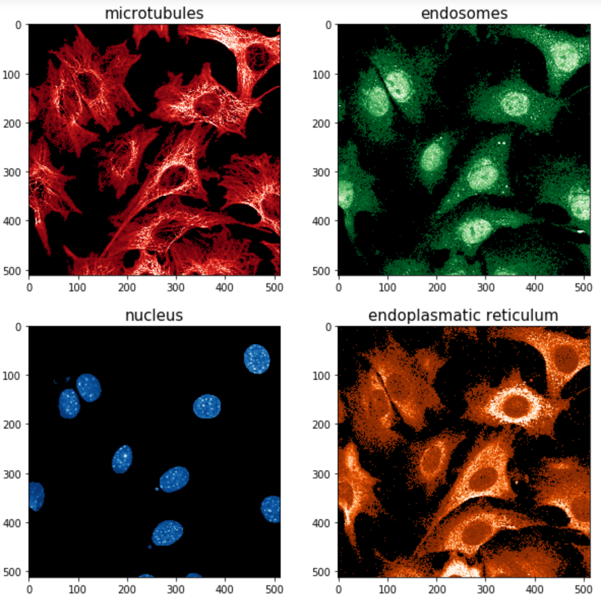
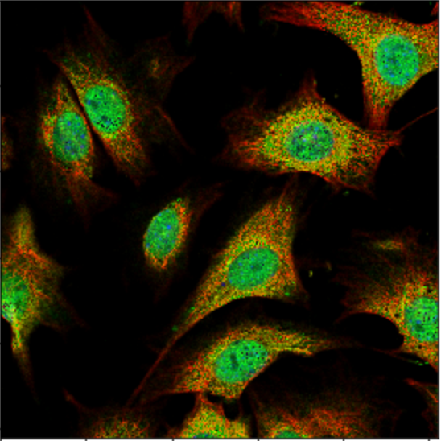
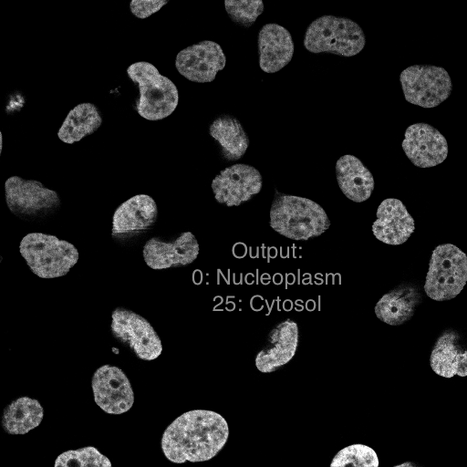
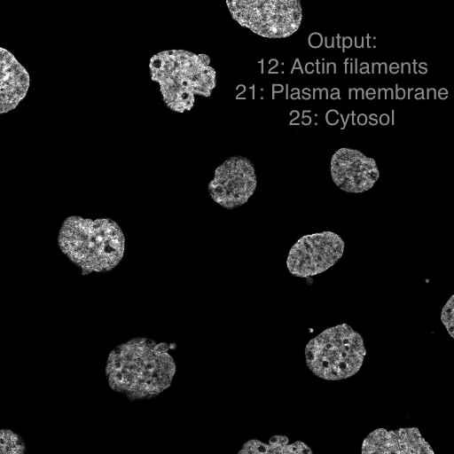
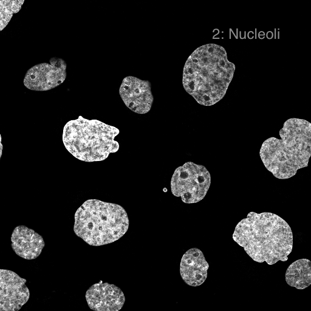
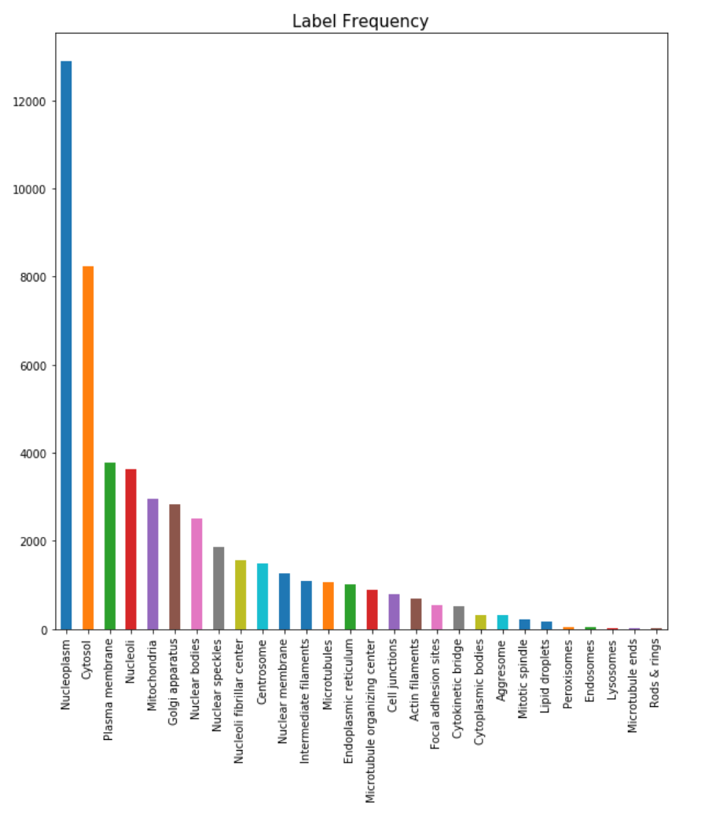
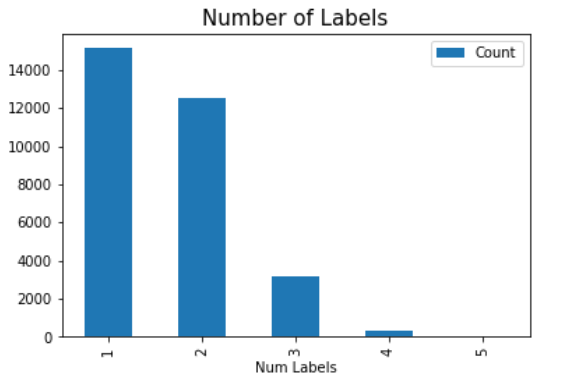

Problem Definition
In Kaggle (a website which opens competitions for data science problems), there is a competition called “Human Protein Atlas Image Classification”. In this competition, dataset and ground truths are given by Kaggle. In the dataset there are 28 different labels for 31072 training images. Our main goal in this project is to implement a system which classifies 28 different protein locations and label the images accordingly.
Background Research
Nowadays, computer vision and machine learning algorithms are frequently used at the same time. The following paper [1] is a good example of this, where they evaluate blood parameters. They used computer vision techniques such as Canny Edge Detection, Morphological Operators and Thresholding for segmentation and pre-processing. After this stage is completed, the output of this stage is fed into machine learning systems such as SVMs (Support Vector Machines) and Neural Networks. The application and final results of this paper are not very related to our project, but the approach to solving the problem can be useful to give us an idea of how to combine computer vision techniques and machine learning algorithms. Another research group [2] focused on an application similar to our problem where their main tool was again SVMs, but in their application, the number of different types of proteins was much lower compared to ours.Input Images
Kaggle has provided us with a training dataset of 31072 images. They are split into 4 color channels - red, green, blue, and yellow, where each channel
represents a different part of the cell being stained. Here is an example:

When you combine them into an RGB image, you get something that looks like this:

Expected Output
There are 28 different labels, and each image can have any amount of them, though in the training dataset, the maximum number of labels is five. We will output a CSV file full of labelings and use some kind of validiation metric to evaluate our model. To visualize this, we've provided three different images we manually labelled.|  |  |  |
Our Work so Far
Currently, we're doing some analysis on the given training data to develop a random labelling for the images, which will give us a baseline success rate to beat. As soon as that is finished, we'll begin working on a Convolutional Neural Network that will label these images for us.|  |
|  |
Credits and Bibliography
[1] V. Bevilacqua et al., "A novel approach to evaluate blood parameters using computer vision
techniques," 2016 IEEE International Symposium on Medical Measurements and Applications (MeMeA),
Benevento, 2016, pp. 1-6.
[2] J. Y. Newberg et al., "Automated analysis of Human Protein Atlas immunofluorescence images," 2009
IEEE International Symposium on Biomedical Imaging: From Nano to Macro, Boston, MA, 2009, pp.
1023-1026.